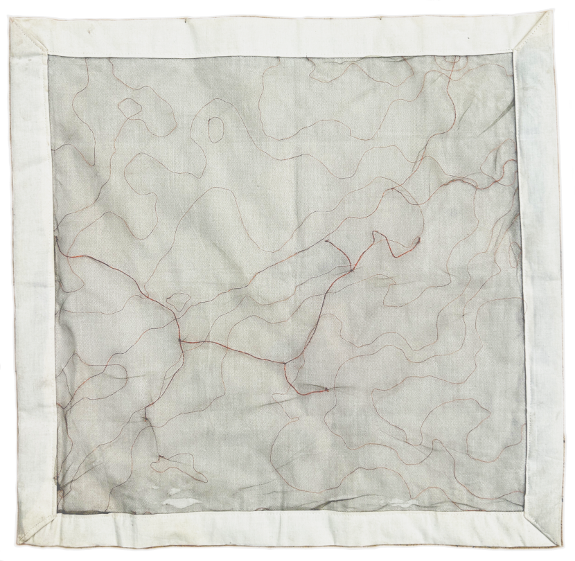
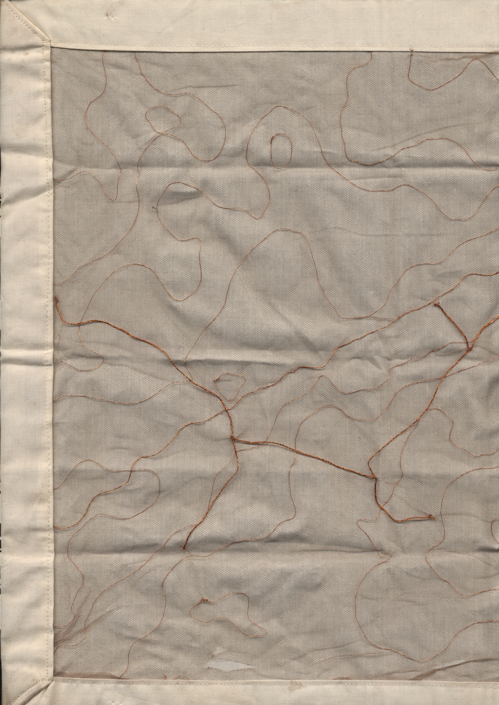
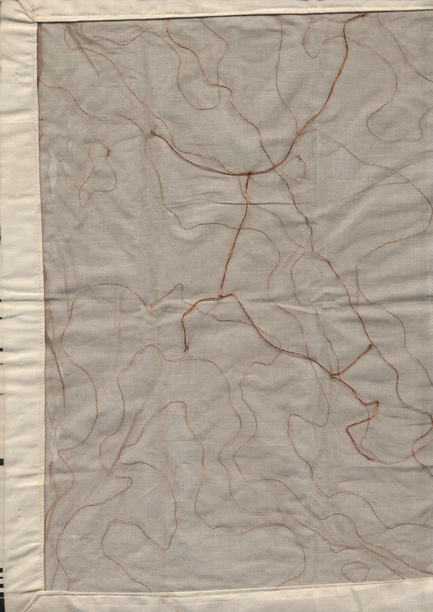

this is a map of Kpalimé in Togo's Plateaux region, 2024.

here copper wire of 2 thicknesses is threaded carefully into nylon tulle and then layered over cotton muslin. the buffer space between the lines and their resting frame suggests that the territory depicted is detached from its surrounds, existing in more of a dream state than a physical reality.
where the thicker twist crosses over the thin thread, at center left, lies Kpalimé's community cemetery. i mapped it initially because i thought it was where my father was buried. i even wrote about it a little, in a piece i think of now as overthought and underdeveloped, but was important for me to produce nonetheless. if you look you'll find it in Needlebound vol. 2.
i know now that my father is buried elsewhere, in his home, a place he forbade me from visiting when he was alive and that is now unreachable to me for a few reasons. i find it still appropriate that i took time to work through this piece, as it let me put certain truths to bed, finally.
i created this map through a series of moves through Los Angeles, running from wildfire and from myself. in order to complete it i think i had to let go of a lot of self-definitions. i do feel lighter, and more settled. i will find my way, eventually, to where i need to be.

